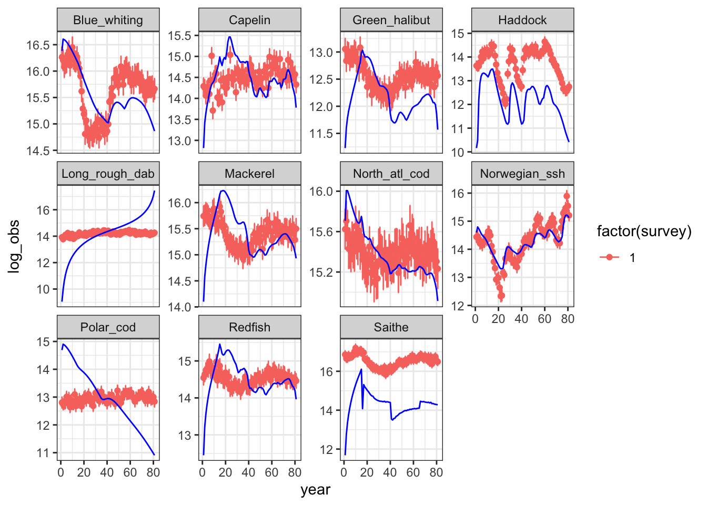
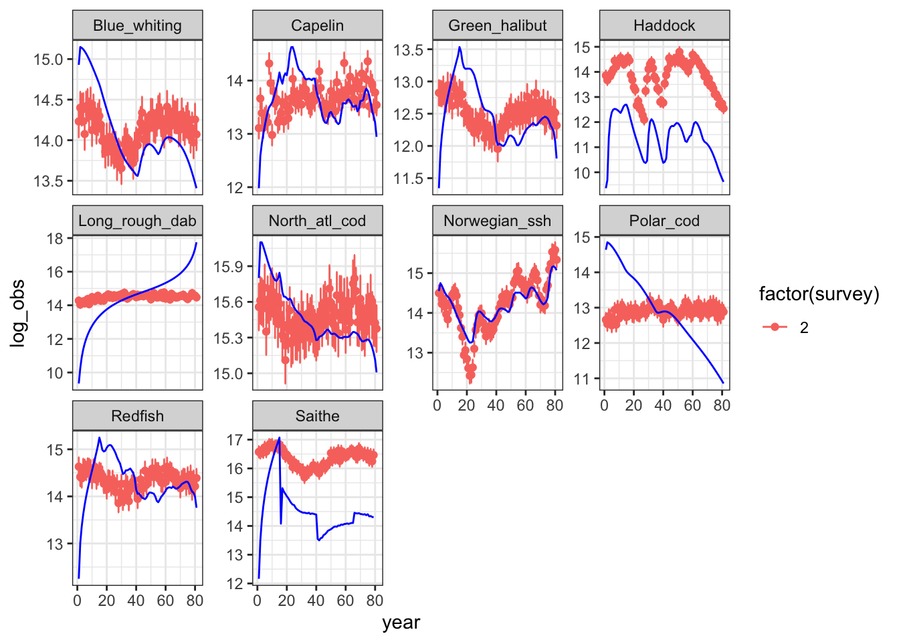
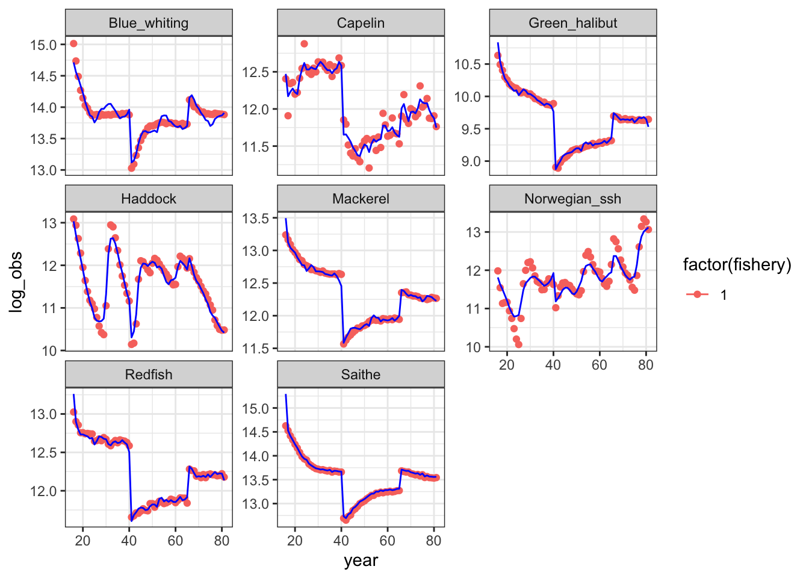
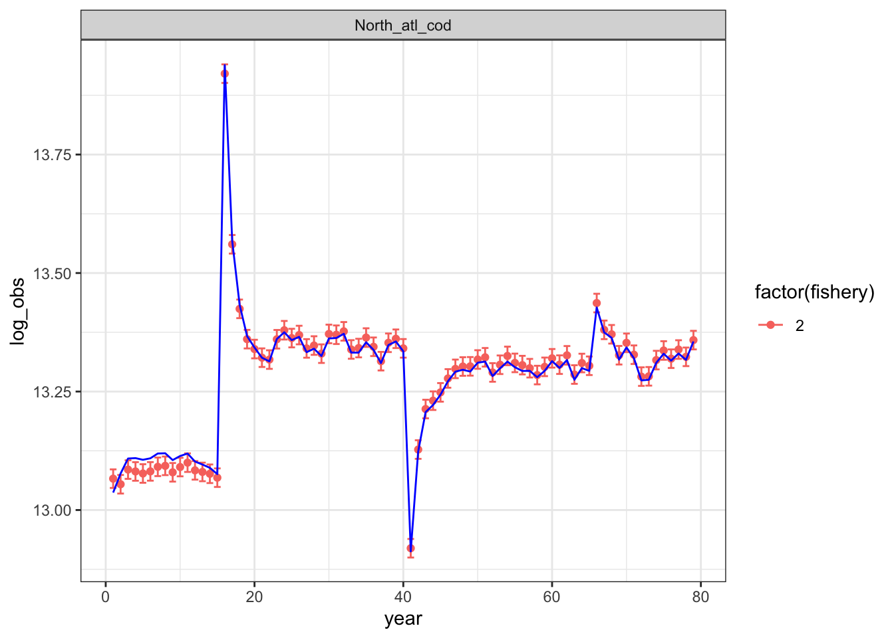

library(here)
library(hydradata)
inputs <- setup_default_inputs()
inputs$outDir <- here()
inputs$outputFilename <- "hydra_sim_NOBA_5bin"
hydraDataList_5bin <- create_datpin_files(inputs,hydraDataList_msk)
# this saves the specific hydralist object, so we could saveRDS it to a diagnostics folder?
# advantage of rds format is we can assign it when reading it in to diagnostics scripts
saveRDS(hydraDataList_5bin, file.path(here("inputRdatalists/hydraDataList_5bin.rds")))Hydra test comparisons
Build the data
Use hydradata package to create the .dat and .pin files. We are working from the forked hydradata repository at https://github.com/thefaylab/hydradata for this project. All of the input .csv files originally created in this script have been copied to the data-raw folder on thefaylab/hydradata repo. Note that some are still in use for variables ww are not changing.
Now we are building inputs directly from the mskeyrun data package with a new function has been incorporated into the hydradata package hydradata::create_RData_mskeyrun(dattype = c("sim", "real"), nlenbin = 5).
The new function allows us to specify whether we are building with simulated or real data, and the number of length bins to use in the input files. Default is 5 length bins but we will change this to generate different .dat and .pin files.
The create_RData_mskeyrun.R file was sourced, and create_RData_mskeyrun("sim", nlenbin = 5) was run to make a new hydraDataList_msk.rda file in the package. Then the package is built locally, R is restarted, and the following code block is run to produce input files.
We probably want to streamline the building process and keep separate hydradatalist R objects that have the different bin definitions.
Run create_RData_mskeyrun("sim", nlenbin = 10) in hydradata, rebuild package, restart R, then…
library(here)
library(hydradata)
inputs <- setup_default_inputs()
inputs$outDir <- here()
inputs$outputFilename <- "hydra_sim_NOBA_10bin"
hydraDataList_10bin <- create_datpin_files(inputs,hydraDataList_msk)
# this saves the specific hydralist object, so we could saveRDS it to a diagnostics folder?
# advantage of rds format is we can assign it when reading it in to diagnostics scripts
saveRDS(hydraDataList_10bin, file.path(here("inputRdatalists/hydraDataList_10bin.rds")))Run create_RData_mskeyrun("sim", nlenbin = 15) in hydradata, rebuild package, restart R, then…
library(here)
library(hydradata)
inputs <- setup_default_inputs()
inputs$outDir <- here()
inputs$outputFilename <- "hydra_sim_NOBA_15bin"
hydraDataList_15bin <- create_datpin_files(inputs,hydraDataList_msk)
# this saves the specific hydralist object, so we could saveRDS it to a diagnostics folder?
# advantage of rds format is we can assign it when reading it in to diagnostics scripts
saveRDS(hydraDataList_15bin, file.path(here("inputRdatalists/hydraDataList_15bin.rds")))Run create_RData_mskeyrun("sim", nlenbin = 20) in hydradata, rebuild package, restart R, then…
library(here)
library(hydradata)
inputs <- setup_default_inputs()
inputs$outDir <- here()
inputs$outputFilename <- "hydra_sim_NOBA_20bin"
hydraDataList_20bin <- create_datpin_files(inputs,hydraDataList_msk)
# this saves the specific hydralist object, so we could saveRDS it to a diagnostics folder?
# advantage of rds format is we can assign it when reading it in to diagnostics scripts
saveRDS(hydraDataList_20bin, file.path(here("inputRdatalists/hydraDataList_20bin.rds")))Yes, slightly tedious, but doable.
Next up, real data. But first lets compare some simulated outputs changing the number of bins.
5 and 10 bins work, 15 and 20 dont
Model errors out. Terminal output:
NECLNASARAHMAC:hydra_sim sarah.gaichas$ ./hydra_sim -ind hydra_sim_NOBA_15bin.dat -nohess -ainp hydra_sim_NOBA_15bin.pin
q par map
7
1 7
1 2 1
1 3 1
1 4 1
1 6 1
1 8 1
1 10 1
1 11 1
1701
completed predicted values for surveys
starting commercial catch nll
Error: Invalid index 25389 used for array range [1, 1] in "prevariable& dvar4_array::operator() (int i, int j, int k)".
hslice index out of boundsI wonder if the sizes are just too thin. Capelin is down to 2 cm size bins. Lets try 12 and see?
Run create_RData_mskeyrun("sim", nlenbin = 12) in hydradata, rebuild package, restart R, then…
library(here)
library(hydradata)
inputs <- setup_default_inputs()
inputs$outDir <- here()
inputs$outputFilename <- "hydra_sim_NOBA_12bin"
hydraDataList_12bin <- create_datpin_files(inputs,hydraDataList_msk)
# this saves the specific hydralist object, so we could saveRDS it to a diagnostics folder?
# advantage of rds format is we can assign it when reading it in to diagnostics scripts
saveRDS(hydraDataList_12bin, file.path(here("inputRdatalists/hydraDataList_12bin.rds")))Nope, same error. We will now use only 5 and 10 bins.
Can we use hydradata’s plot functions?
Some work and create output in the results directory, needs more tweaking for current shape of -ts.dat inputs.
hydradata::create_documentation(outFile = "documentation-5bin.html", outDir = here::here("results/05bin"), data = readRDS(here::here("inputRdatalists/hydraDataList_5bin.rds")))Sarah’s first run, 5 length bins fully from mskeyrun source
Bring in code from hydra_diag:
# bring in reptoRlist
source("https://raw.githubusercontent.com/thefaylab/hydra_diag/main/R/read.report.R")
# read the rep file
output <- reptoRlist(here::here("results/05bin/hydra_sim.rep"))
names(output) [1] "EstNsize" "EstBsize" "EstRec" "EstFsize"
[5] "EstM2size" "table" "survey" "catch"
[9] "pred_catch_size" "nll_catch_size" "pred_survey_size" "nll_survey_size"
[13] "pred_dietprop" "nll_dietprop" "fishsel" "survey_sel" Bring in inputs from the -ts.dat file (note that hydradata contains an R object with these inputs). The hydra_diag/hydra-diagnostics.rmd now takes advantages of this.
ENSURE THE VERSION OF HYDRADATA MATCHES THE INPUTS I saved the Rlist with the same name as dat and pin files so we can automate this
library(tidyverse)── Attaching packages ─────────────────────────────────────── tidyverse 1.3.2 ──
✔ ggplot2 3.3.6 ✔ purrr 0.3.4
✔ tibble 3.1.8 ✔ dplyr 1.0.9
✔ tidyr 1.2.0 ✔ stringr 1.4.0
✔ readr 2.1.2 ✔ forcats 0.5.1
── Conflicts ────────────────────────────────────────── tidyverse_conflicts() ──
✖ dplyr::filter() masks stats::filter()
✖ dplyr::lag() masks stats::lag()hydraDataList <- readRDS(here::here("inputRdatalists/hydraDataList_5bin.rds"))
repfile <- here::here("results/05bin/hydra_sim.rep")
obs_surveyB <- hydraDataList$observedBiomass
obs_catchB <- hydraDataList$observedCatch
#obs_diet <- datlist$observedSurvDiet #done belowFunction reptoRlist cannot read the tables of fits to survey and catch indices correctly.
Eventually fix in hydra_sim code report section, but for now read from already generated rep files:
gettables <- function(repfile, biorows, catchrows){
# scan repfile to the line "table of fits to survey"
# next line is "survey biomass data, predicted, residual, nll"
# columns are the -ts file inputs with predicted B, residual, and nll appended
# based on https://stackoverflow.com/questions/37663246/extract-data-between-a-pattern-from-a-text-file
reptext <- readLines(repfile)
tablelist <- split(reptext, cumsum(grepl(pattern = 'table of fits to', reptext)))
survlist <- as.list(tablelist$`1`[1:biorows])
sv <- lapply(survlist[-c(1:2)], function(x) read.table(textConnection(x), header = FALSE))
survdf <- do.call(rbind, sv)
names(survdf) <- c("survey","year", "species", "biomass", "cv",
"pred_bio", "residual", "nll")
catchlist <- as.list(tablelist$`2`[1:catchrows])
ct <- lapply(catchlist[-c(1:2)], function(x) read.table(textConnection(x), header = FALSE))
catchdf <- do.call(rbind, ct)
names(catchdf) <- c("fishery", "area" , "year" , "species", "catch", "cv",
"pred_catch", "residual", "nll")
tablist <- list(survdf, catchdf)
return(tablist)
}
biorows <- dim(obs_surveyB)[1]
catchrows <- dim(obs_catchB)[1]
indexfits <- gettables(repfile, biorows, catchrows)Plot indices
#survey_obs <- hydraDataList$observedBiomass %>%
survey_obspred <- indexfits[1][[1]] %>%
mutate(obs = biomass + 1e-07,
pred = pred_bio + 1e-07,
log_obs = log(obs),
log_pred = log(pred),
log_lo = log_obs - 1.96*cv,
log_hi = log_obs + 1.96*cv,
obs_lo = exp(log_lo),
obs_hi = exp(log_hi),
species = hydraDataList$speciesList[species])Fits to survey indices of abundance
for (surv in unique(survey_obspred$survey)) {
cat("#### Survey #", surv, " \n")
p1 <- survey_obspred %>%
filter(survey == surv) %>%
ggplot() +
aes(x= year, y = log_obs, group = species, col=factor(survey)) +
geom_errorbar(aes(ymin = log_lo, ymax = log_hi)) +
geom_point() +
geom_line(aes(x=year, y=log_pred), col = "blue") +
facet_wrap(~species, scales = "free_y") +
theme_bw() +
guides(species = "None")
print(p1)
cat(" \n\n")
}Survey # 1

Survey # 2

#catch_obs <- hydraDataList$observedCatch %>%
catch_obspred <- indexfits[2][[1]] %>%
mutate(obs = catch + 1e-07,
pred = pred_catch + 1e-07,
log_obs = log(obs),
log_pred = log(pred),
log_lo = log_obs - 1.96*cv,
log_hi = log_obs + 1.96*cv,
obs_lo = exp(log_lo),
obs_hi = exp(log_hi),
species = hydraDataList$speciesList[species])fits to Catch time series
for (fleet in unique(catch_obspred$fishery)) {
cat("#### Fleet #", fleet, " \n")
p3 <- catch_obspred %>%
filter(fishery == fleet,
catch > 0) %>%
ggplot() +
aes(x= year, y = log_obs, group = species, col= factor(fishery)) +
geom_errorbar(aes(ymin = log_lo, ymax = log_hi)) +
geom_point() +
geom_line(aes(x=year, y=log_pred), col = "blue") +
facet_wrap(~species, scales = "free_y") +
theme_bw() +
guides(species = "None")
print(p3)
cat(" \n\n")
}Fleet # 1

Fleet # 2

Above does indices, below does comps
Make this a function in hydra_diag/hydra-diagnostics.rmd currently at lines 122-211
obs_survey <- hydraDataList$observedSurvSize %>% tibble()
#colnames(obs_survey) <- c('number','year','species','type','InpN','1','2','3','4','5') #todo - modify so number of bins is based on size of dataframe
obs_survey <- obs_survey %>% pivot_longer(cols=6:ncol(.), names_to = "lenbin") %>%
filter(value != -999)%>%
mutate(lenbin = as.integer(str_remove(lenbin, "sizebin")),
label = rep("survey",nrow(.)),
species = hydraDataList$speciesList[species])
#obs_survey$label<-rep(("survey"),each=7189)
#dim(obs_survey) #7189
pred_surv<-output$pred_survey_size
obs_survey$pred_surv<-pred_surv
nll_survey<-output$nll_survey_size
obs_survey$nll_surv<-nll_survey
obs_survey$pearson<-((obs_survey$value-obs_survey$pred_surv)/sqrt(obs_survey$pred_surv))
colnames(obs_survey) <- c('number','year','species','type','InpN','lenbin','obs_value','label',
'pred_value','nll','pearson')
#obs_catch<-read.table(tsfile, skip=4109, nrows=608, header=F)
obs_catch <- hydraDataList$observedCatchSize %>% tibble()
#colnames(obs_catch) <- c('number','area','year','species','type','InpN','1','2','3','4','5')
obs_catch<-obs_catch %>% pivot_longer(cols=7:ncol(.), names_to = "lenbin") %>%
mutate(lenbin = as.integer(str_remove(lenbin, "sizebin")),
label = rep("catch",nrow(.)),
species = hydraDataList$speciesList[species]) %>%
filter(value != -999)
#obs_catch$label<-rep(("catch"),each=1855)
#dim(obs_catch) #1855
pred_catch<-output$pred_catch_size
obs_catch$pred_catch<-pred_catch
nll_catch<-output$nll_catch_size
obs_catch$nll_catch<-nll_catch
obs_catch$pearson<-((obs_catch$value-obs_catch$pred_catch)/sqrt(obs_catch$pred_catch))
colnames(obs_catch) <- c('number','area','year','species','type','InpN','lenbin','obs_value','label',
'pred_value','nll','pearson')
#diet_catch<-full_join(obs_catch, obs_survey, by = NULL,copy = FALSE)
diet_catch <- bind_rows(obs_catch, obs_survey)
#### READ OBSERVED (.dat) AND PREDICTED (.rep) DIET PROPORTION VALUES ####
# todo as above, make the data file an argument and have the dimensions be determined from the file rather than hard-coded
#obs_diet<-read.table(tsfile, skip=4724, nrows=4721, header=F)
obs_diet <- hydraDataList$observedSurvDiet %>% tibble()
#obs_diet$label<-rep(("diet"),each=4721)
obs_diet<-obs_diet %>% pivot_longer(cols=6:ncol(.), names_to = "prey") %>%
mutate(#lenbin = as.integer(str_remove(lenbin, "V")),
species = hydraDataList$speciesList[species],
label = rep("diet",nrow(.))) %>%
filter(value >0 )
#obs_diet$label<-rep(("diet"),each=22810)
#dim(obs_diet) #22810
pred_diet<-output$pred_dietprop
obs_diet$pred_diet<-pred_diet
nll_diet<-output$nll_dietprop
obs_diet$nll_diet<-nll_diet
obs_diet$pearson<-((obs_diet$value-obs_diet$pred_diet)/sqrt(obs_diet$pred_diet))
colnames(obs_diet) <- c('number','year','species','lenbin','InpN','prey','obs_value','label', 'pred_value','nll','pearson')
#mydata<-full_join(diet_catch, obs_diet, by = NULL,copy = FALSE)
#mydata <- bind_rows(diet_catch, obs_diet)
mydata <- diet_catch %>%
mutate(#prey = replace_na(prey, -99),
area = replace_na(area, 1),
type = replace_na(type, 0))
data <- mydata
data$residual<-ifelse(data$pearson<0,"negative","positive")
data$res_abs<-abs(data$pearson)
data<-as.data.frame(data)
#head(data)
#names(data)
#str(data)
#select type of data "label= catch, survey or diet"
temp.catch = data[which(data$label == "catch"),]
temp.surv = data[which(data$label == "survey"),]
#temp.diet = data[which(data$label == "diet"),]
data <- obs_diet #data <- read.csv("outputs/survdiet.csv", header = T)
#data<- select(data, -X)
data$residual<-ifelse(data$pearson<0,"negative","positive")
data$res_abs<-abs(data$pearson)
temp.diet = data[which(data$label == "diet"),]